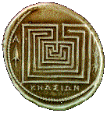
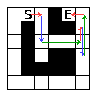

History is filled with legends and stories associated with mazes and labyrinths that have been shrouded by mystery.
In some ancient religion a maze functioned as a cult center and symbolized mankind's search for all eternal truths.
In their initiation cult young people
have to pass across a maze composed by squared chambers that can communicate
with the ones at the north, south, east or west. They have to go from a start
point to an end point passing by the shortest number of chambers and have to
follow some ritual. They have to respect a sequence of 3 moves that will be
repeated until the end point is reached. In the first move they pass through
one chamber, in the second through two chambers and in the third through three
chambers. In each of these moves they can’t change their direction.
Problem
|
Given a map of the chambers disposed in a rectangular grid find the shortest
path, in number of moves, from a start point to an end point. Notice that, in the sequence of moves the ritual described above must be respected. In each move you must pass through the corresponding number of chambers, without changing your direction during a move. You must begin with 1 chamber and repeat the sequence of 1, 2 and 3 chambers until the end is reached. The end can be reached in any of the states. |
 |
The first line contains the number of test cases.
The first line of each test case contains two integers separated by a single space: R (2<= R<= 300) corresponding to the number of rows and C (2 <= C <= 300) corresponding to the number of columns.
Each of the following R lines contains C characters. For each
character, a dot "." represents a chamber, a hash mark "#"
represents a wall and the capital letters "S" and "E"
represent the start and the end position respectively.
Output
The output consists of one line for each test case containing the number of
moves from "S" to "E" or the word "NO" if there is no solution.
Sample Input
2 5 4 S... .#.# .#.. .##. ...E 6 6 .S...E .#.##. .#.... .#.##. .####. ......
NO 3